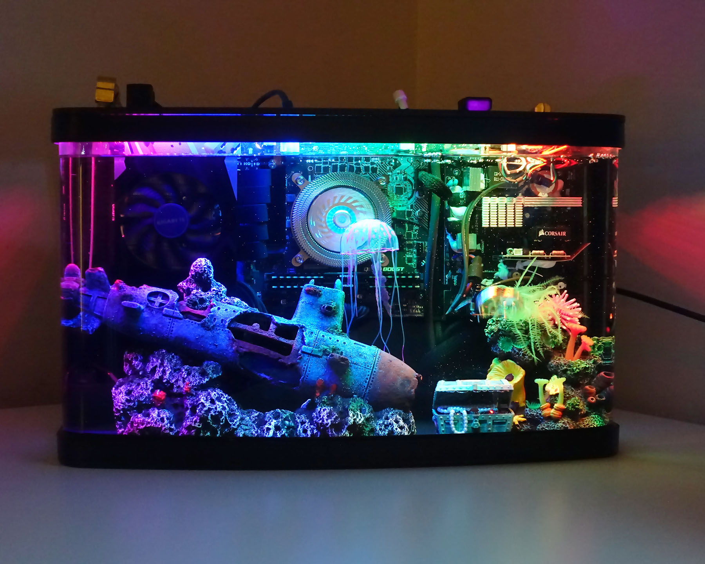

𝙒𝙝𝙮 𝙞𝙨 𝙋𝘾 𝙂𝙖𝙢𝙞𝙣𝙜 𝙎𝙤 𝙂𝙤𝙤𝙙?
Welcome to

As a gaming platform, the PC remains the only place where we can have something that resembles a relationship with our hardware. This sense of control, the series of fine adjustments that are available to us to tweak or ignore, is evident to anyone that plays games on a computer. Even if you bought your rig pre-built or you're on a laptop, over time, you start listening to the thing. You realize that you're not playing on a black box. You notice when the boot time is a little off, when your case fans are spinning at 100 percent, when your framerate's hitching after a new patch. You'll modify its behavior to make it work better for you.
Open Market
With PC you dont have to buy your games all from one place and this means that you can get games very cheap and still support the game developer instead of most of the money going to Sony, Microsoft or Nintendo. You also dont have to pay astronomical prices for remasters of games that arnt actually that different to the original game. You can play any game from any year. You can also emulate games which makes the PC able to play even more games! There are so many places to buy your games from and if you dont like a certain seller then you can just go to a different one and you have that extra choice in an open market. You also dont need to pay for a subscription to play online like Playstation Plus or Xbox Live Gold. On console you really need a subscription just to play with your friends! And this means that PC gaming is cheaper that consoles in the long run.
Ultimate Customisation
With PC almost everything is customisable and you can upgrade and change individual parts whenever you like. This is why when buying a PC there is no fixed or set price unlike with a console or another gaming platform. There will always be different parts and different options for every type of person and setup. You dont have to use a controller on every game or an awkward touch screen, if your playing on mobile. With PC you can use everything from keyboards and mice to gamepads, joysticks, steering wheels and controllers. Of course not every game will support every option of controller but there are many programs that allow you to bypass that rule. For instance, Forza Horizon 4 Would not allow you to use a Playstation controller on the game however if you download a program called DS4 you are then able to use your PS4 controller. PC is so customisable in fact that somebody has even tranformed their PC case into a fish tank that water cools their PC!

Now you wont be able to do anything close to that on a console!
Superior Performance
Current generation consoles at the time of writing this have capped framerate of 60pfs with many games being capped at 30fps meaning there is no point buying a high refresh rate monitor for a console as they wont go higher than 60fps. Probably the main reason people buy a PC is beacuse on their high uncapped framerates. While my Playstation is running Apex Legends at 60fps im playing it on my PC at 165fps and I believe that to a certain extent framerate is more important than resolution. However, I am still able to play at a higher resolution and framerate than my PS4 at the same time.
More Useful
A PC is also just more useful because you are able to do everything a normal computer can do and game on it. You can edit video, edit photo, write and render. You can also stream your games. I know you can also do this on a console but you can do so much more with it on a PC. You can have stream overlays on PC too. On PC you can also go into the game files and do whatever you want want with them. You also have the whole internet to download mods from.